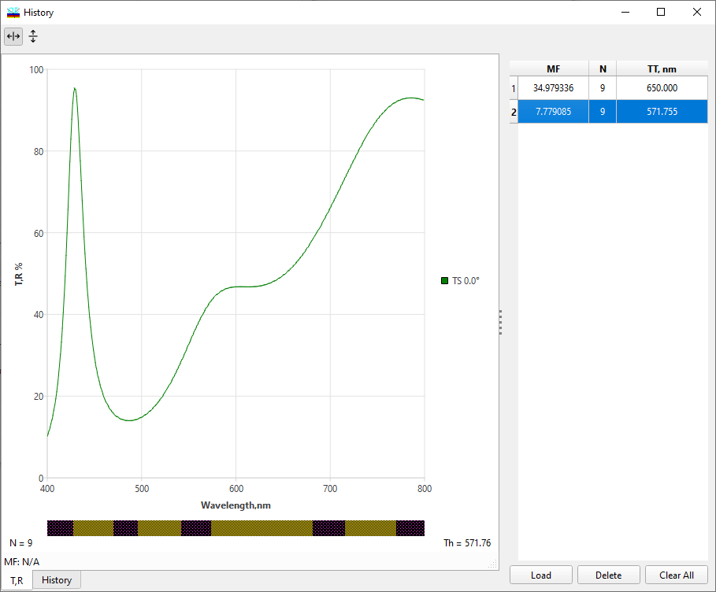
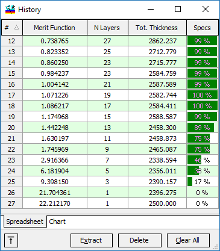
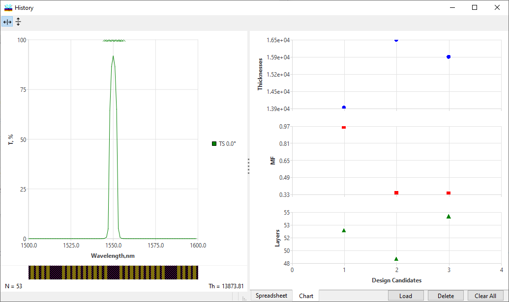
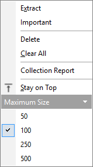

History
History
Navigation: OptiLayer Menu Commands > View Menu >
History
` <idh_window_list.html>`__ ` <idh_menu_view.html>`__ ` <idh_collection.html>`__
The History window displays the contents of the History database. The History database can be accessed with the History command in View menu. The History database is a temporary database that contains designs obtained at previous steps of refinement or synthesis procedures. You can replace the current design with any design stored in the History database, which can then be used as a starting design for another design procedure or as a precursor to saving the design in the Design database.
The History window is automatically displayed when you run Refinement, Gradual Evolution or Needle Optimization procedures.
Designs stored in the History database are characterized by merit function values, numbers of design layers, and design total thicknesses. Up to the last 100 results are stored in the History. If necessary, the size of the History can be adjusted using the right-click popup menu (see below).

Additionally, if a Spectral/Angular Specification is loaded, in the column Specs, OptiLayer displays Quality metrics: the number of spectral or angular points where this requirement is already fulfilled.

Designs in the History can be ordered using different criteria. Click on the table captions to change the order of the designs. An arrow in the column caption indicates the currently selected order.
The History represents stored designs in a spreadsheet form.

In addition, the History represents stored designs in graphical form, making the computational process much more vivid. To replace the design in memory with a design from the History, select the design you want and click the Extract button. Press the Delete button to remove the selected design from the History database. It is possible to select more than one design by using Ctrl+Left mouse click or simply pressing the left mouse button and dragging to create a selection area. If multiple designs are selected, the Delete button will delete them in one operation. Press the Clear All button to remove all designs from the History. These commands are also accessible through the right-click popup menu.

You can mark certain designs as important using the “Important” designation, ensuring that they are not excluded from the History during computations.
The “Stay on Top” command in the additional popup menu instructs the History window to always remain on top of other windows.
The size of the History can be adjusted using the “Maximum Size” expandable group of commands.
You can generate a text report on all designs stored in the collection database by using the “History Report” command in the Results menu.